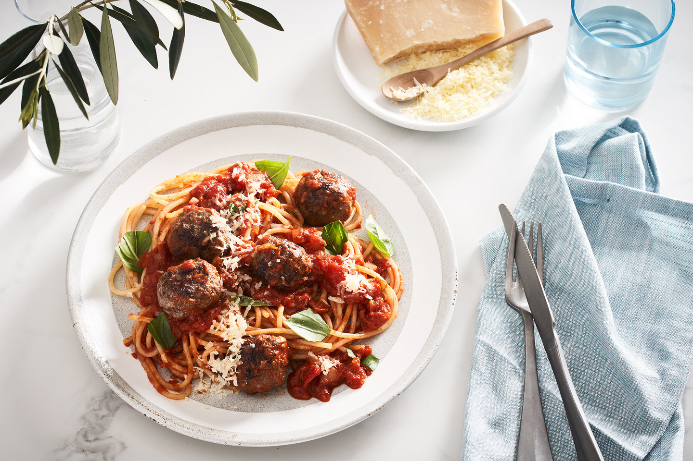

Spaghetti and Meatballs Recipe

How to make Spaghetti and Meatballs
You can’t go wrong with this all-time family favourite. Deliver a quick and easy mid-week meal with your favourite store-bought sauce,
or jazz it up for the adults by adding sundried tomatoes and a pinch of chilli.
Ingredients
- 1 Packet (12) First Light grass-fed Wagyu meatballs
- 2 Tablespoon of Rice Bran Oil
- 1 Packet spaghetti or pasta of your choice
- 4 Tablespoon of Parmesan
- Italian Tomato Sauce
- 2 Tablespoon of Olive Oil
- 1 Finely Diced Onion
- 2 Cloves of Crushed Garlic
- 1 Can of Diced Tomatoes
- 4 Tablespoon of Tomato Paste
- 1/3 Cup of Beef Stock or Water
- Salt and Pepper
- 1/3 Cup of Chopped Fresh Basil
- 2 Tablespoon of Dried Parsley
- 2 Tablespoon of Sugar
- 1/2 Tablespoon of Balsamic Vinegar
Steps
- Heat a frying pan to medium and sauté the garlic and onion in the oil until soft and almost translucent.
- Add the remaining ingredients and bring to a simmer for approx. 5 mins before removing from heat.
- Heat oil in a large frying pan on medium heat. Cook the meatballs in batches,
using tongs to rotate balls until they are well-browned on all sides.
Ensure balls are cooked through before removing them from the heat.
- Bring a large pot of salted water to the boil and cook pasta according to packet instructions.
- Heat the sauce in a pot or pan.
- Serve pasta in bowls topped with meatballs and sauce, then finished with shaved Parmesan.
Back